우주선과 위성에서 사용하는 CPU와 OS
게시: 2022-07-28T06:30:35+09:00
<요즘 우주선에는 어떤 processor를 쓰나> 일일이 다 찾아보지는 못했는데 아직까지는 IBM PowerPC 기반으로 만든 영국 방위산업체 BAE의 single board computer (SBC)를 많이 쓰는 듯. 가령 NASA가 2018년에 화성에 착륙시킨 InSight 우주선에도 BAE Systems RAD750 SBC를 사용. BAE의 최신 RAD5545 SBC (사진1)도 IBM PowerPC 기반. 물론 엄청나게 비쌈. 이렇게 radiation hardening을 거친 processor가 비싼 이유는 방사선과 각종 입자들의 공격을 버티기 위해 특수 절연재료를 쓰기도 하고 error-correction을 위해 일부 설계 자체를 강화하기도 하기 때문. 무엇보다, 그런 변경의 효과가 어떤지 테스트를 하는데 많은 시간과 비용이 들어가기 때문.
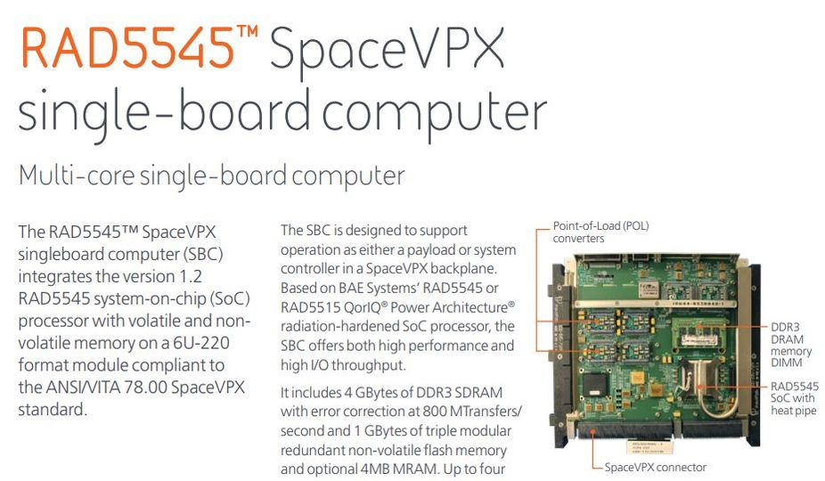
그러나 일반 상용 computing에서 mainframe과 UNIX를 몰아내고 있는 open source 열풍은 우주까지 진출하고 있는 중. 요즘엔 그런 특수 제작된 radiation hardened 부품을 쓰지 않고 그냥 일반 x86 processor를 쓰는 경우가 많은 듯. 가령 2017년 상용 컴퓨터 회사 HP Enterprise와 NASA는 일반 상용(commercial off-the-shelf (COTS)) 컴퓨터 서버를 우주 정거장 ISS에 올려보내 정상 운용이 되는지 테스트. 지금도 거기 있는지 모르겠으나 1년 넘게 별 error없이 지상에서처럼 잘 쓰고 있다고. HPE 직원들은 크게 기뻐하며 이 서버를 Spacebourne Computer라고 명명 (사진2).
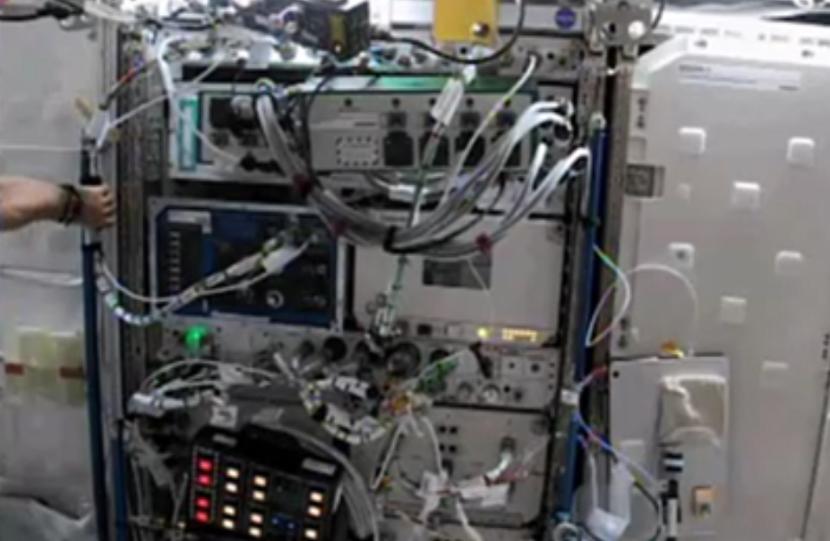
정말 평범한 서버인 Spaceboure Computer가 각종 high-energy 입자들이 판을 치는 우주 환경에서도 정상작동하는 이유는 hardware 대신 software를 강화했기 때문. 원래 인터넷의 기반을 이루는 TCP/IP 자체가 불안정한 네트워크 환경에서도 에러없이 통신하기 위해 acknowledge packet이라든가 3-way handshake라는가 하는 것들을 갖추고 있는데, 그런 logic들을 더 극악한 우주 환경에 맞게 더욱 강화한 것. 요즘 컴퓨팅에서는 모든 것에 "Softeware Defined 어쩌고'가 유행인데, 우주에서도 Software Defined radiation hardening이 이루어지고 있는 셈. 엘론 머스크의 훨씬 진보된 우주선 SpaceX의 Falcon 9 로켓 (사진3)에서도 별다른 radiation-hardening을 거치지 않은 그냥 x86 기반 processor에 OS도 Linux를 쓴다고. 대신 모든 컴퓨터는 3중화. 그래서 모든 연산은 3대가 각각 수행한 뒤 3대의 결과를 모아서 투표로 결정. 그래서 2중화나 4중화가 아니라 3중화임. 만약 3대가 각각 다른 결과를 낼 경우엔? 그 연산은 다시 수행.
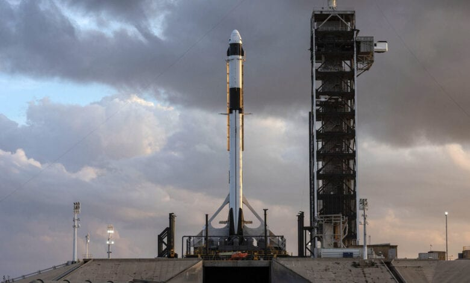
다만 SpaceX에서는 진짜 심각한 방사능과 대전 입자가 우박처럼 쏟아지는 outer space 언저리까지만 갔기 때문에 굳이 그런 비싼 processor를 쓸 필요가 없었기 때문이기도 함. <우주선에서는 어떤 OS를 쓰나> 위에서 언급한 BAE의 radiation-hardening 처리가 된 RAD750 프로세서 등에서는 어떤 OS를 쓸까? 대략 VxWorks의 OS를 쓰는 모양. 이건 주로 embeded system에 사용되는 real time OS (RTOS). 우리가 쓰는 대부분의 컴퓨터 OS, 그러니까 윈도우즈나 리눅스나 안드로이드, UNIX 등은 모두 time sharing OS. 즉, 한정된 자원(CPU나 메모리 등)을 여러 사용자 혹은 여러 process들이 정해진 규칙에 따라 time slice 방식으로 나눠쓰는 것. (사진1) 이 방식이 압도적으로 선호되는 이유는 훨씬 처리량(throughput)이 높기 때문.
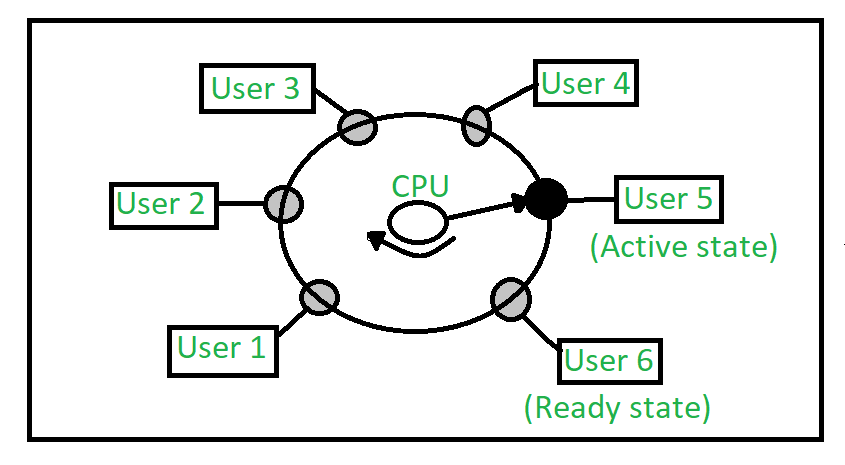
다만 time sharing OS가 제대로 할 수 없는 것이 명확한 응답시간 제공. 즉 똑같이 뭔가 명령을 내려도 이미 수행되고 있는 다른 사용자나 process 등의 요청을 수행하느라 즉각적인 응답을 못하는 경우가 종종 발생. 물론 그게 milisecond (ms) 단위이므로 (UNIX, 리눅스에서는 1 tick이 10 ms) 월스트리트 등에서 큰 돈 굴리는 트레이더들이 쓰는 high frequency trading system들도 대개 그냥 time sharing OS를 씀. 이게 주식거래나 게임할 때는 상관없는 지연이지만 음속으로 날아가는 탄도탄의 제어에 사용될 때는 문제가 됨. 그래서 군용이나 의료용 생명유지 장치 등 특수목적에는 Real Time OS라는 것을 사용. (사진2) 이건 스케쥴러에 의해 CPU의 time slice를 나눠쓰는 방식이 아니라 event-driven 방식으로 필요시 pre-emptive 스케쥴링을 하는 것. 다시 말해 더 중요한 업무에 뭔가 새로운 명령이 도착한다든가 하면 자기 몫의 time slice가 올 때까지 기다리지 않고, 현재 CPU를 쓰고 있는 process를 쫓아내고 그 명령을 수행하는 것.
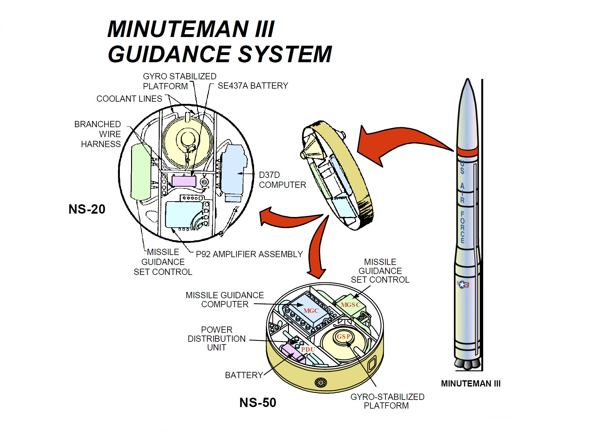
가령 time sharing OS에서는, 외부에서 뭔가 network packet이 날아와도 즉각 처리하지 않고 network interface card의 device driver가 CPU time slice를 할당받은 이후에야 interrupt 처리를 수행. 그러나 real time OS에서는 network packet이 날아오면 즉각 interrupt 처리가 수행됨. 이렇게 뭔가 이벤트가 발생하면 그 처리가 (운빨에 따라) 들쑥날쑥하지 않고 어느 시간 안에는 반드시 처리 완료되는 것이 real time OS의 장점. 그런데 RTOS는 그 자체도 비싸고 그걸 사용하는 hardware도 특수제작된 것이라서 비싼 것이 대부분 (사진3)..
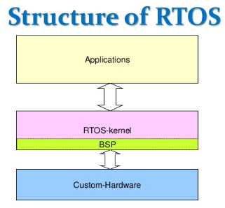
그런데... 리눅스와 오픈소스에서 안되는 것이 어디 있음? Real-Time Linux (RTL) Collaborative Project라는 것이 발족되어 PREEMPT_RT (preemptive real time) patch를 만들어냄. 이걸 적용하면 그림처럼 리눅스에서도 real time 서비스를 할 수 있다고 (사진4).
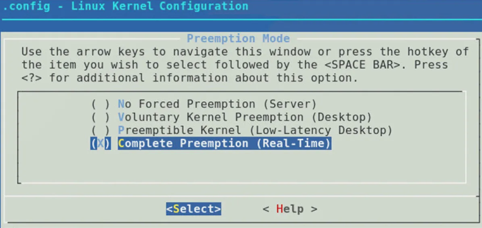
엘론 머스크의 SpaceX 위성이나 로켓에서도 이 PREEMPT_RT patch를 적용한 리눅스를 쓴다고 함. <궤도를 떠도는 리눅스 컴퓨터들> 현재까지 SpaceX에서 쏘아올린 Starlink 위성들(사진1)의 개수는 대략 2,200대 이상인데, 이 위성들에는 각각 4천대의 리눅스 컴퓨터가 실려있음. 물론 일반적인 데스크탑이나 랩탑에 레드햇이나 우분투 등의 일반 리눅스를 설치해서 위성에 실은 것은 아니고 임무 수행을 위해 필요한 최소한의 기능과 용량만을 남긴, 즉 stripped-back linux computer. 여기에는 전부 일반 x86 processor를 쓰지는 않고 대부분 SpaceX가 자체적으로 설계한 ASIC (application-specific integrated circuit, 일종의 경량화된 CPU)를 탑재.
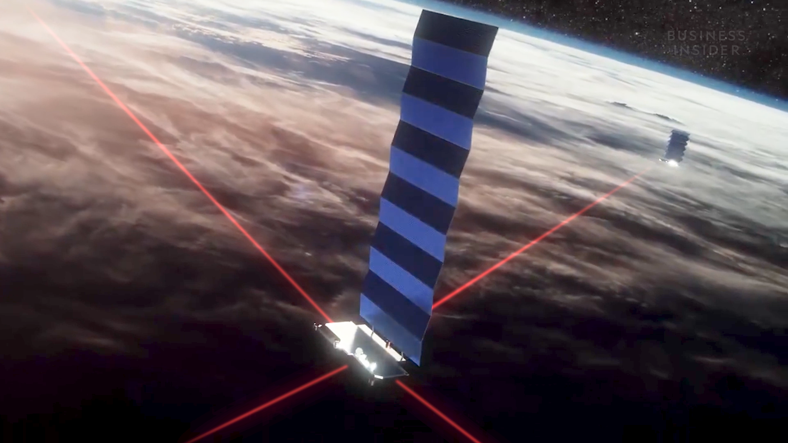
지상의 접시 안테나를 가진 가입자들에게 인터넷 서비스를 해주는 것이 Starlink 위성들의 주임무인데, 사실 고속 넷웍 처리에는 고성능 CPU가 필요하지 않음. 그냥 network packet을 받아서 목적지에 따라 라우팅만 해주면 됨. 그래서 network card에는 당연히 그냥 간단한 ASIC chip을 장착하고, 고성능 network switch에도 (일반 x86 processor를 쓰는 경우도 있지만) 그런 ASIC chip을 붙이는 경우가 많음. (사진2)
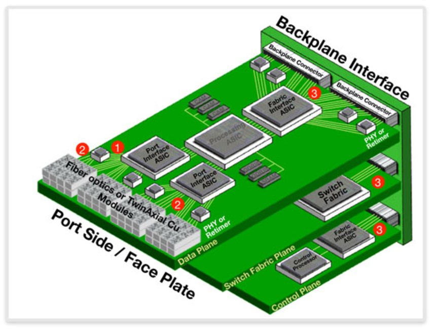
그래서 TSMC나 삼성전자처럼 chip 생산공장은 가지지 않고 설계만 하는 micro-processor 전문업체들, 즉 fabless 업체들을 보면 의외로 유명한 AMD나 NVIDIA, Apple 등이 1위가 아니고 스마트폰에 들어가는 AP(application procesor)와 각종 ASIC, 그리고 network card나 switch 등에 들어가는 ASIC 설계하는 업체들이 대거 상위권에 포진. (사진3)
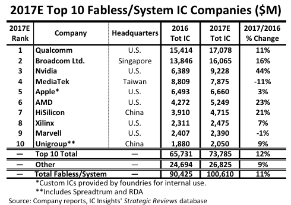
<우크라이나 침공과 오픈소스 진영> 과거 냉전시대는 물론이고, 2000년 이전에는 수퍼컴에 사용될 수 있는 컴퓨터 프로세서나 소프트웨어는 러시아나 부칸, 리비아 등에 수출하지 못하게 되어 있었음. 인텔이나 크레이 등의 관계사 직원들은 그런 수출 금지 규정 교육과 서약을 주기적으로 해야 했음. 최근 ARM architecture를 어거지로 손에 넣은(?) 중국과는 달리 러시아는 VLIW (Very Long Instruction Word, 인텔이 만들다 말아먹은 Itanium processor도 이 계열) 아키텍처 기반의 Elbrus processor를 가지고 있음. 이걸로 지들끼리 수퍼컴도 만들어 잠수함 스크루나 탄도 미사일 개발 등에 썼다고.
근데 요즘 수퍼컴은 고속 넷웍의 발달 덕분에 만들기 쉬움. 막말로 평범한 서버들을 고속 넷웍으로 묶고 그걸 병렬로 운용할 MPI 등의 소프트웨어만 설치하면 되는데, 그런 소프트웨어가 대부분 오픈소스임. 그런데 그런 여러가지 오픈소스는 다양한 processor architecture 지원을 하는 것이 원칙이라, 러시아 Elbrus도 지원하는 모양. 가령 모든 과기연산에 기본으로 사용되는 선형대수 library인 OpenBLAS도 Elbrus 지원을 시작함.
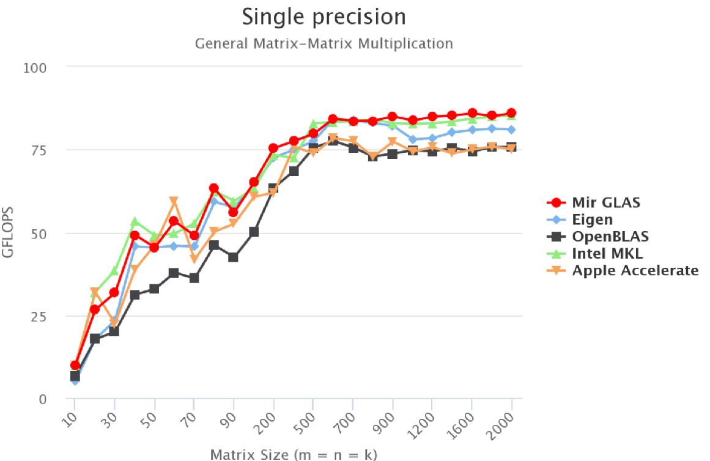
(예전에는 비싼 돈 내고도 미국 눈 밖에 나면 살 수 없었던 SW를 이제는 공짜로 쓸 수 있는 시대...)
근데 이거 해주면 결국 러시아가 우크라이나든 향후 어디든 침공할 때 사용할 미사일 개발을 우리가 돕는 셈이라며 Elbrus 지원을 중단해야 한다는 목소리가 나오는 모양.
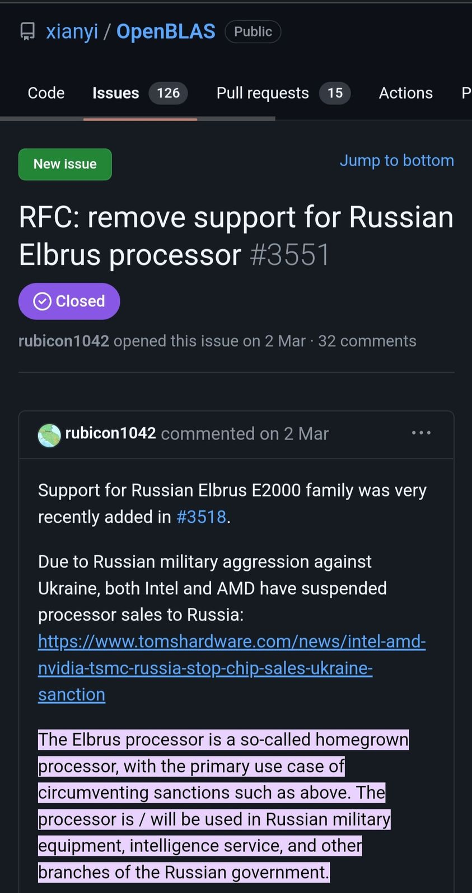
근데 실제로는 아마 러시아 애들도 인도든 중국이든 대만이든 한국이든 통해서 Intel AMD ARM 등을 원하는 대로 살 수 있을 것. 실제로 러시아는 엘브루스 외에도 ARM 아키텍처 기반의 Baikal이라는 독자 processor를 만들었는데, 물론 ARM 사에 IP 사용료를 지불하고 또 TSMC에 생산을 위탁. 엘브루스를 성공적으로 잘 쓰고 있다면 이렇게 바이칼이라는 별도 프로세서를 만들었을 것 같지는 않음. 막말로 중고 랩탑이나 아이폰만 잔뜩 사모아도 수퍼컴 만드는 것은 가능. 우리나라 네이버 데이터센터에서만도 매년 폐기된 노후 서버가 thousand 단위로 헐값에 쏟아지는데, CIA가 TSMC나 샘숭의 출고품 행선지는 감시해도 그런 중고서버까지는 감시 못할듯.